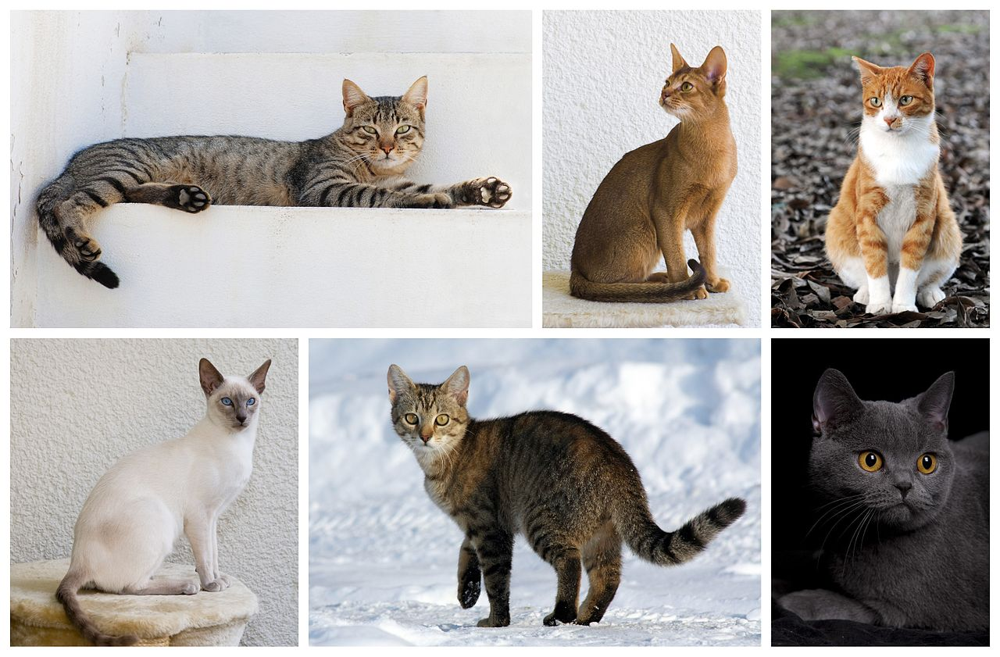

|  | Кошки-род хищных млекопитающих из семейства кошачьих. В устаревших классификациях к нему причисляли всех представителей малых кошек, однако в современной классификации непосредственно к кошкам относятся лишь некоторые малые виды, обитающие в Евразии и Африке, из которых наиболее известной является произошедшая от лесной кошки домашняя кошка. |